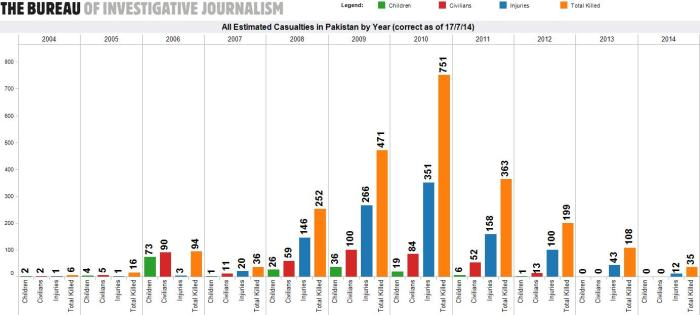
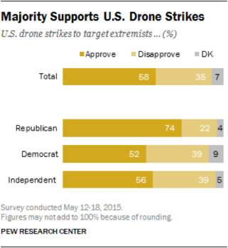

Drone Strikes: More Than Meets the Eye? - REPOST
By Vaibhav Kumar - October 19, 2016
REPOST FROM GEORGIA POLITICAL REVIEW
The Obama administration has used unmanned aerial vehicles (UAVs) ten times more than any other administration. The exponential increase in the use of these mobile weapons has reinforced much of the public’s preexisting notion about drones. The public would prefer the use of these remotely-controlled machines instead of any boots on the ground strategy. That line of logic is so convincing – what rational American wouldn’t want to save a soldier’s life over a foreign enemy?
Ideally, drones are meant to eliminate specific targets that are deemed a threat to a country’s national security. These attacks occur throughout the world but a majority of them target high level terrorist organizations like AQAP and ISIS in the Middle East. Although drones are much easier and “safer” to use against terrorists, they are not nearly as accurate as people perceive them to be. Many would argue that the killing of a terrorist is worth the costs, but a new study from the Intercept found that 90 percent of people killed in drone strikes “were not the intended targets,” but were civilians instead. Other statistical models point to a 50:1 ratio of civilians to militants killed in drone strikes. This level of inaccuracy is absurdly high when it comes to unintended lives lost. Inhabitants where drone strikes occur should not be punished just for residing in an area of instability and violence.
The number of civilians killed via drone strikes is not concrete because the government keeps a majority of this intelligence classified. In addition to this, the evidence the government does release may be inaccurate. The Obama administration recently released certain civilian casualty numbers this year in July. The release claimed that drones under the Obama administration have only killed 64 civilians but this report fails to share information such as where and when these strikes took place, likely to hide the intelligence from public scrutiny. Other groups such as the Long War Journal has put the civilian casualty rate at 200 under the Obama administration, while the Bureau of Investigative Journalism has put the number at 325.
The number of civilian deaths may also be deflated because of how the government defines civilians. For example, if you are a young man standing near a suspected terrorist, you are considered a legitimate target and thus not considered in the civilian casualty report.

Morally questionable practices with drones continue on a regular basis. Such was the case with the Wech Baghtu wedding party airstrike which killed 67 Afghan civilians in 2008, and the wedding attack in Yemen which killed twelve in 2013, and the Deh Bala wedding party airstrike which killed 47 Afghans. The list goes on and on.
The United States government also conducts drone strikes using immoral targeting techniques, like “double-tap droning.” The drone bombs a target, waits for some time, and then bombs the scene again when the first responders come to help the victims. Mirza Shahzad Akbar, a Pakistani lawyer, revealed, “In the past it used to be a one-off, every now and then. Now almost every other attack is a double tap. There is no justification for it.” This method has also proved to be very ineffective as the civilian casualty rate is exceedingly high. Only 2 percent of these types of attacks actually kill terrorist militants.
Not only is our current drone policy morally corrupt because of the innocent lives it takes on a global level, but it is also counterproductive as it results in more instability and terrorism in the region. Four United States Air Force members wrote a letter to Obama warning him of how drones are used as propaganda and recruiting methods for major terrorist groups like ISIS.
The resentment evoked by American drone strikes is underestimated by the general public. Richard Clarke, former National Coordinator for Security, Infrastructure Protection and Counter-terrorism for the United States State Department said, “[Y]ou cause enemies for the United States that will last for generations. All of these innocent people that you kill have brothers and sisters and tribe—tribal relations. Many of them were not opposed to the United States prior to some one of their friends or relatives being killed. And then, sometimes, they cross over, not only to being opposed to the United States, but by being willing to pick up arms and become a terrorist against the United States. So you may actually be creating terrorists, rather than eliminating them.” If America harms innocent families’ loved ones, the aggrieved may join extremist organizations to avenge the deaths of those lost – that’s human nature.
Drones also have a history of destroying the local economy in the place of attack, which often fuels ISIS recruitment propaganda. Terrorist groups will often help the local individuals by distributing food, water, and other basic necessities, which reinforces the perception that they will aid the devastated community. This is especially seen with AQAP in Yemen. These groups just demand that you join their organization to benefit their cause and as a result they will provide the locals with jobs, homes, and a future in return. This quid pro quo relationship is often the reason that terrorist recruitment is most successful in poorer areas because of the desperation these people face. Drone strikes are just another factor which help individuals to act rashly and join terrorist organizations.

The people of the United States continue to approve drone strikes. 58 percent of the public is in support of the use of drones while only 35 percent disapproves. The number increases to 74 percent approval throughout the Republican Party. The reason for this varies, but it may be caused because of a lack of media representation. For example, a strike in North Waziristan killed 10 people and another strike in South Waziristan killed four people, but the only news network that showed footage of these events was an English language Iranian governmental news channel. Furthermore, the United States has airstrikes in Yemen several times a month and the United States Central Command announces these attacks weeks after. Popular networks have the information on drone strikes but rarely care to report on it. The lack of mainstream coverage of the frequent drone strikes that the U.S. military conducts has left the general public ignorant about this serious issue.
Although drones don’t require boots on the ground, they pose a greater threat to American interests in the long term because of the provocation of anti-American sentiment. As Americans, we first need to acknowledge the issue and then ask ourselves if we want to be known as the country that slaughters hundreds of uninvolved civilians or a country that can resolve their national security issues without endangering thousands of peace-loving citizens.